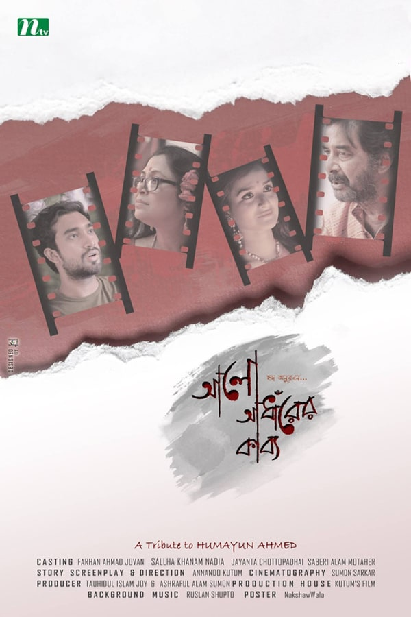
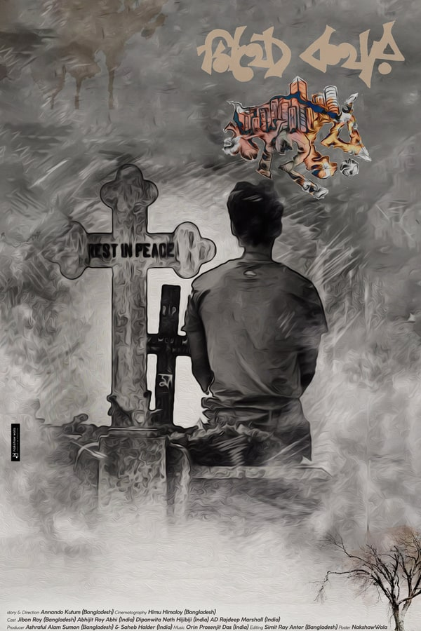
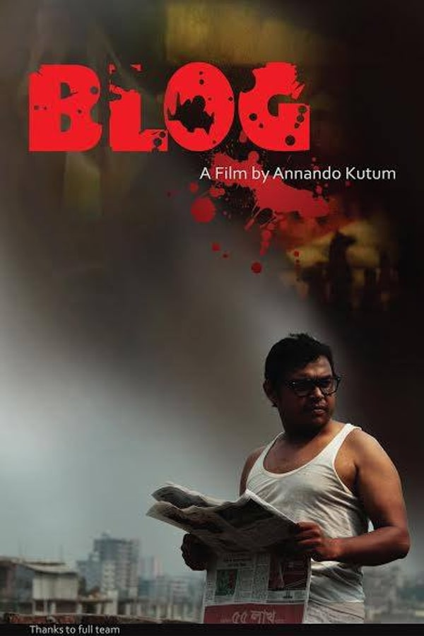
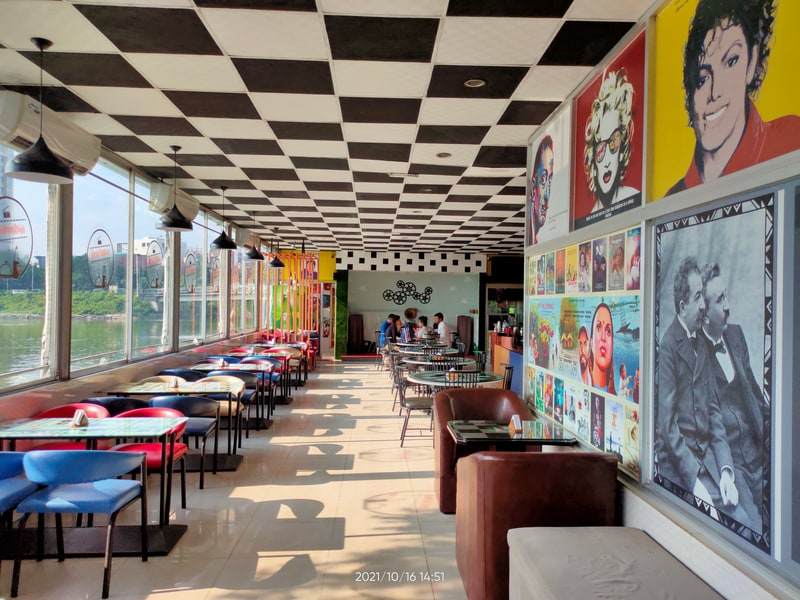

Annando
Kutum
About The Filmmaker

Annando Kutum (আনন্দ কুটুম) is a dynamic film director, producer, and screenwriter with over 14 years of immersive experience spanning feature films, documentaries, television fiction, and creative advertising. Rooted in both commercial and alternative cinema in Bangladesh and India, his creative journey is defined by versatility, narrative depth, and an unwavering commitment to cinematic truth.
His foundational cinematic education was shaped under the mentorship of legendary auteur Tanvir Mokammel through the Film Appreciation Course at the Bangladesh Film Institute (BFI). In 2012, Annando began his feature film career as an Assistant Director on Mokammel's national award-winning period epic Jibon Dhuli (জীবনঢুলী) and later contributed to the landmark Partition documentary Border Line (সীমান্তরেখা). Over the years, he has collaborated closely with celebrated auteurs including Morshedul Islam, as well as working alongside the Bangladesh Air Force on the 1971 Liberation War documentary Kilo Flight (কিলো ফ্লাইট).
As an independent director and screenwriter, Annando has created thought-provoking narrative works including Alo Adharer Kabbo (আলো আঁধারের কাব্য), the Kolkata-based psychological mystery A City of Lie, and the socially urgent narrative Blog. His signature approach—"Humanistic Political Narrative"—fuses deep empathy for marginalized humanity with the acute sociopolitical realities of South Asia.
Beyond the director's chair, Annando is an active cultural organizer, curator for Bangladesh at the 5th International Kolkata Short Film Festival (IKSFF 2025), programmer for national and international film festivals, author of the forthcoming book Dhaka Depicted, and founder of Jheel Kutum Cafe—Bangladesh's first film-themed cultural hub.
Education & Credentials
Cultural Resonance & Local Inspiration
“To create impactful and culturally resonant films that inspire and reflect the local community, fostering talent and innovation in the local film industry.”
Enriching Cultural Identity & Commercial Balance
“To be a leading force in the local film industry, producing acclaimed films that enrich cultural identity and achieve both critical and commercial success.”
Artistic Pillars & Methodology
The Filmmaker's Signature, Technique & Ethical Compass
Humanistic Political Narrative
Blending themes of human kindness with the complexities of political intrigue and personal odysseys. Highlighting the inherent goodness in people while exploring systemic dynamics to craft stories that offer a compassionate perspective on societal contradictions.
Scriptwriting Expertise
Viewing the screenplay as the vital backbone of cinematic art, Annando pens his own scripts from conception to draft. His writing combines rigorous journalistic investigation with poetic dialogue, giving voice to marginalized communities often excluded from mainstream cinema.
Guerrilla Filmmaking
Embracing a raw, agile, and authentic approach by shooting swiftly with minimal gear in real-world environments. This hands-on method captures spontaneous human reactions, spatial intimacy, and unfiltered emotional truth with documentary-like immediacy.
Films As Director & Screenwriter
Original Directorial & Written Works

Poetry of Light and Dark
A poignant drama contrasting two couples—an elderly visually impaired couple whose unconditional love and profound trust illuminate the superficial vanity and doubts of a sighted young couple. Commercially successful (2x ROI) and critically acclaimed.
একটি মর্মস্পর্শী নাটক যা দুটি বিপরীত যুগলের সম্পর্ক তুলে ধরে—একটি বয়স্ক দৃষ্টিহীন দম্পতি যাদের নিঃশর্ত ভালোবাসা এবং বিশ্বাসের গভীরতা তরুণ দৃষ্টিসম্পন্ন দম্পতির বাহ্যিক রূপভিত্তিক সংশয় ও অভিযোগের চোখ খুলে দেয়। বাণিজ্যিকভাবে সফল (২ গুণ রিটার্ন) এবং সমালোচকদের দ্বারা প্রশংসিত।

A City of Lie
Set against the vibrant and enigmatic backdrop of Kolkata. A young Bangladeshi photographer captures a portrait of an alluring woman and falls in love; deceived in his search, his journey through the city's historic avenues leads to profound truths of miraculous rebirth.
কলকাতার প্রাণবন্ত ও রহস্যময় পটভূমিতে নির্মিত। একজন তরুণ বাংলাদেশী আলোকচিত্রী এক রূপসী নারীর ছবি তুলে তার প্রেমে পড়ে যান। তাকে খুঁজতে গিয়ে প্রতারিত হওয়ার পর তিনি কলকাতার ঐতিহাসিক স্থানগুলোর ভেতর দিয়ে নিজের এক অলৌকিক পুনর্জন্মের গভীর সত্য আবিষ্কার করেন।

Blog — Freedom of Expression
Set during Bangladesh's perilous 2013–2017 era confronting fundamentalist attacks against freethinking bloggers. A powerful narrative documenting a courageous blogger's daily peril, resilience, and personal sacrifice in defense of truth.
২০১৩ থেকে ২০১৭ সালের বাংলাদেশে মুক্তমনা ব্লগারদের ওপর মৌলবাদী আক্রমণের স্পর্শকাতর সংকটকাল নিয়ে নির্মিত চলচ্চিত্র। সামাজিক যোগাযোগ মাধ্যমে কুসংস্কার ও অন্যায়ের বিরুদ্ধে সোচ্চার এক ব্লগারের প্রতিদিনের শঙ্কা এবং সত্য উচ্চারণের আত্মত্যাগের দলিল।

Jheel Kutum Cafe — Cultural Space
Founded in 2020 as Bangladesh's first cinema-themed cultural cafe, serving as a celebrated gathering place and creative networking sanctuary for young independent filmmakers, artists, and cinephiles.
২০২০ সালে প্রতিষ্ঠিত দেশের প্রথম চলচ্চিত্র-কেন্দ্রিক ক্যাফে, যা তরুণ ও স্বাধীন চলচ্চিত্র নির্মাতা এবং চলচ্চিত্রপ্রেমীদের এক প্রাণবন্ত আড্ডাস্থল ও মিলনমেলা হিসেবে পরিচিতি লাভ করে। চলচ্চিত্র ও মুক্ত সংস্কৃতির বিকাশে এর অবদান স্মরণীয়।
Cultural Leadership & Initiatives
Entrepreneurship, Authorship & Social Advocacy
Jheel Kutum Cafe
“A cultural sanctuary dedicated to connecting filmmakers, nurturing indie projects, and fostering cinematic discourse.”
Founded in 2020 by Annando Kutum, Jheel Kutum Cafe was established as Bangladesh's first dedicated film-themed cafe. It quickly became a vital cultural landmark and informal creative incubator for independent filmmakers, scriptwriters, and cinephiles. In addition to cafe culture, Annando has led transformative philanthropic drives—organizing free medical camps, educational materials distribution for underprivileged children, and food relief for marginalized communities.
Festival Footprints & Curation
National & International Film Festival Participation
| Festival / Event Name | Role & Capacity | Location | Year |
|---|---|---|---|
|
5th International Kolkata Short Film Festival (IKSFF)
|
Curator for Bangladesh | Kolkata, India | 2025 |
|
4th Bogura International Film Festival
|
Festival Programmer | Bogura, Bangladesh | 2024 |
|
Dhaka International Film Festival · Bulletin Sub-Editor (16th DIFF)
|
Delegate & Sub-Editor | Dhaka, Bangladesh | 2016–2024 |
|
4th Nepal Cultural International Film Festival
|
International Delegate | Kathmandu, Nepal | 2022 |
|
Global Youth Film Festival Bangladesh (2nd Edition)
|
Festival Programmer | Bangladesh | 2018 |
|
Kolkata International Film Festival
|
Student Delegate | Kolkata, India | 2015–2017 |
|
International Film Festival of India (IFFI) · Film Bazaar
|
Market Fellow | Goa, India | 2016 |
|
13th Int. Short & Independent Film Festival (ISIF) · Talent Campus
|
Talent Campus Fellow | Dhaka, Bangladesh | 2014 |
Selected Professional Credits
Assistant Direction, Line Producing & Documentary Collaborations
| Film Title | Role | Director / Producer | Type | Year |
|---|---|---|---|---|
|
Jibon Dhuli · Liberation War Epic
জীবনঢুলী (Jibon Dhuli)
|
Assistant Director | Tanvir Mokammel | Feature Film | 2012 |
|
Border Line · The Partition of Bengal
সীমান্তরেখা (Border Line)
|
Assistant Director | Tanvir Mokammel | Documentary | 2017 |
|
Kilo Flight · Bangladesh Air Force 1971
কিলো ফ্লাইট (Kilo Flight)
|
Assistant Director | Bangladesh Air Force | Documentary | 2018 |
|
Feature & Documentary Collaborations
মরশেদুল ইসলাম চলচ্চিত্র সহযোগিতা (Morshedul Islam Collaborations)
|
Assistant Director | Morshedul Islam | Cinema | 2019 |
|
Seven Feature Films as Chief AD & Line Producer
৭+ পূর্ণদৈর্ঘ্য চলচ্চিত্র ব্যবস্থাপনা (7+ Feature Film Management)
|
Chief AD · Line Producer | Various National Directors | Features | 2012–2024 |
| Project / Client | Role | Production / Agency | Type | Special Note |
|---|---|---|---|---|
|
Lafz Body Spray TVC with Mashrafe Bin Mortaza
লাফজ বডি স্প্রে (মাশরাফি বিন মর্তুজা)
|
Chief Assistant Director | Gorai Films / Golpolok | TV Commercial | National Cricket Captain Campaign |
|
World Bank · Mobility of Handicapped Individuals
বিশ্বব্যাংক প্রতিবন্ধী উন্নয়ন প্রকল্প
|
Director · Writer | World Bank Development | Advocacy Film | Human Rights & Inclusion |
|
Meril Lip Care, Mir Cement & Twinkle Baby Diaper
মেরিল লিপ কেয়ার, মীর সিমেন্ট ও টুইঙ্কেল ডায়াপার
|
Project Manager · Line Producer | PRAN-RFL · Square Group | National TVCs | Commercial Broadcast |
|
BRAC, Fulki & World Vision Social Impact Films
ব্র্যাক, ফুলকি ও ওয়ার্ল্ড ভিশন সামাজিক প্রামাণ্যচিত্র
|
Writer · Assistant Director | Development Organizations | Social Documentaries | Empowering Marginalized Voices |
Personal Statement & Philosophy
Filmmaking, World Development, Peace, Social Journalism & Philanthropy
As a filmmaker and social entrepreneur, I believe in the transformative power of storytelling to drive social change and foster global development. My journey in filmmaking focuses on depicting the rich narratives of marginalized communities, using the medium as a tool for advocacy and awareness.
In today's interconnected world, I am passionate about promoting peace as essential for sustainable development. My work in social journalism complements my filmmaking by highlighting underrepresented stories and the struggles of individuals seeking a better life.
Philanthropy is central to my values, and I am dedicated to uplifting underprivileged communities through education, healthcare, and essential resources. I see my philanthropic efforts as an extension of my creative work, both aimed at empowering individuals and promoting positive change.
Ultimately, my perspective on filmmaking, world development, peace, social journalism, and philanthropy is intertwined. I am committed to using my skills to contribute to a more just and compassionate world, believing that together, we can create a brighter future for all.
Tagore · Satyajit Ray · Kurosawa · Kiarostami · Buddha
Deeply influenced by the philosophy of peace, universal brotherhood, and human dignity, seeking to weave a tapestry of love that uplifts those around us and inspires collective journeys toward a brighter tomorrow.
Health Camps · Children's Aid · Eco-Film Sets · Marathons
Active social advocate providing educational supplies, healthcare camps, and emergency community aid. Believer in labor safety and eco-conscious film sets, keeping balanced through marathon running and meditation.
Connect & Collaborate
Direct Filmmaker Communications & Project Enquiries